Working with the Graphics Generator
Scenario: You want to create a graphic of your Desigo plant using the Desigo CC Graphics Generator.
Reference: For background information, see the Graphics Generator section.
Flowchart:
Prerequisites:
- Driver and network are available.
- Data was imported.
- In the user group, under Application rights, Desigo Graphics Generator is selected.
- System Manager is in Engineering mode.
Steps:
1 - Creating Graphics Structure
Set the hierarchy for saving graphics pages before starting to create graphics. There are two main variants for a folder structure:
- Building and plant structure
- Building > Plant
- Plant > Building
- Own graphics structure as per project requirements
- In System Browser, select Application View.
- Select Applications > Graphics and the tab Graphics.
- From the Graphics toolbar, click Create New
 , and click New Folder.
, and click New Folder. - The Create new folder dialog box opens.
- Enter a Name for the folder and click OK.
NOTE: The system name is derived automatically from the description. Spaces are replaced by _ (underscore). - Create additional folders or subfolders as per the project requirements.
- The folder structure to save graphics pages is created.
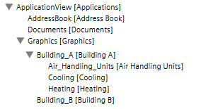

Note:
Graphics pages can be moved afterwards under the Views tab. Do not use Windows Explorer to move graphics pages since various object references are not taken over.
2 - Basic Settings for the Graphics Generator
- In System Browser, select Management View.
- Select Project > System settings > Conversion tools > Desigo Graphics Generator.
- The Desigo Graphics Generator tab displays.
- Select the library type for the entire project in the Mapping Graphics Filter drop-down list. The selected filter reduces the selection of mapping graphics in the Mapping graphic column. The following options are available:
- All
- 2D DIN Color
- 2D Grey Color
- 2D
- 2D+
- 3D
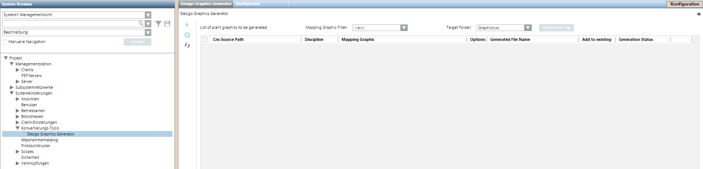
3 - Modify Mapping Graphic
Modify mapping graphics for project-specific requirements prior to generating the graphics pages. This minimizes post processing. The following example demonstrates how to move the extract air fan from position A to position B.
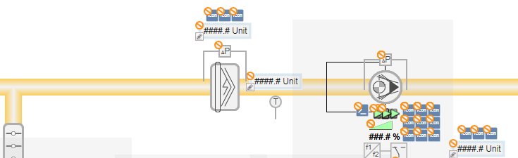
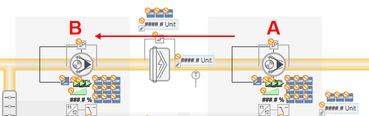
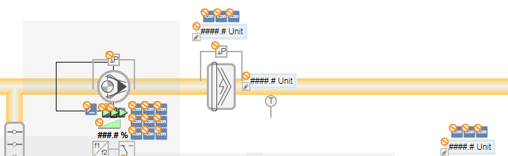
- Create new folder structure for project-specific mapping graphics
- Open mapping graphic in the Graphics Editor
- Editing the Mapping Graphic
- Save the mapping graphic under the same name
Creating a Folder Structure
The folder structure in the L4 Project must first be created to save project-specific mapping graphics.
- In System Browser, select Management View.
- Select Project > System Settings > Libraries > [L1-Headquarters] > BA.
- Select Graphics Generator Ventilation (Desigo).
- The Library Configurator tab displays.
- Click Entire library …
 and then OK.
and then OK. - The folder structure is created under Project > System settings > Libraries > [L4 Project] > [BA] > Graphics Generator Ventilation (Desigo).
- Repeat steps 3 and 4 for all libraries Graphics Generator [plant type] (Desigo).
- All folders in L4 Project are created for saving project-specific mapping graphics.
Opening Mapping Graphic
- Select Project > System settings > Libraries > [L1-Headquarters] > BA > Graphics Generator [Plant type] (Desigo) > Graphics mapping pages.
- The available mapping graphics are displayed in the Graphic tab.
- Click Edit
 .
. - The Graphics Editor opens.
- Click Open
 .
. - Select [System] > Libraries > [L1-Headquarters] > BA > Graphics Generator [Plant type] (Desigo) > Graphics mapping pages.
- In the Name column, select the mapping graphic and click Open.
- The mapping graphic opens. Some symbols with a gray background are deposited on mapping graphics and are labeled as variant symbols. The variant symbols are replaced by the correct symbols during generation.
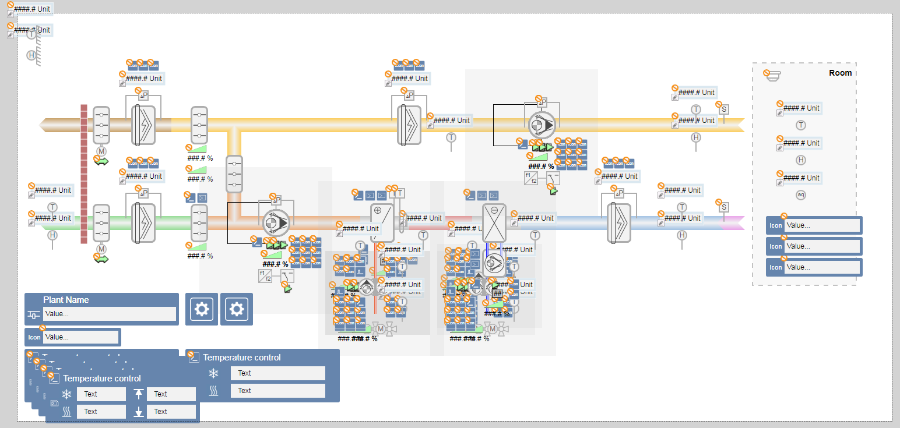
Editing the Mapping Graphic
- Open the mapping graphic for editing in the Graphics Editor.
- Select the corresponding symbol, for example: Fan off.
- Left-click and drag the symbol to the desired position on the mapping graphic.
- Release the left mouse button.
- The symbol is now in the new position.
- In the Properties dialog box, the object reference stays the same, for example: AN=FanEx.
- (Optional) Edit additional symbol.
Saving the Mapping Graphic
- Click Save As
 .
. - A Save Object As dialog box appears.
- Select the folder structure System > Library > L4 Project > BA > [Plant] > Graphic mapping pages.
- Enter a name in the Name field. Select one of the variants:
- Apply the default name. Only the project-specific solution is displayed in the selection list when assigning a mapping graphic.
- Enter a new name for the mapping graphic. The name of the mapping graphic must start with the prefix MAP_. When assigning a mapping graphic, the selection list displays the project-specific solution, as created by headquarters, the region, and RCs.
- Click Save.
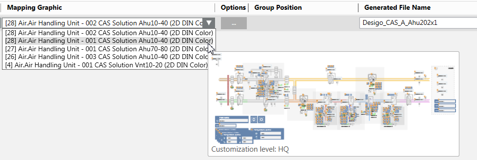
4 - Extend Variant Symbol
The existing headquarter library needs to be extended by an additional function in the fan.
- The additional function is available at the project levels L2 – L4.
- The new symbol is available for the function.
- In System Browser, select Management View.
- Select Project > System settings > Libraries > [Project level] > BA > Graphics Generator Ventilation (Desigo) > Graphics variant symbols.
- The Graphics preview opens.
- Select a variant symbol, for example, a fan.
- Right-click and select Edit.
- The graphics editor opens for editing.
- Click Insert new level
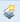
. - In the column Level name, enter the condition, for example, FN=Fan4St.
- A new level column, Level 9, is displays.
- For the new function, select Level 3.
- The base symbol for precise placement is displayed.
- In the library browser, select the corresponding symbol.
- Drag-and-drop the new symbol over the displayed symbol.
- Clear the Level 3 check box and select Level 9.
- Click Save As .
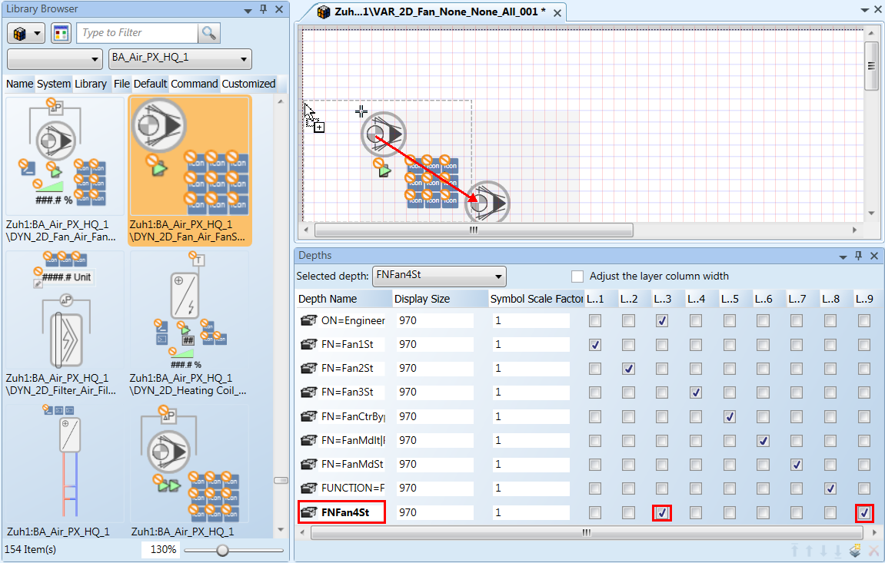
5 - Generate Graphics Pages
The graphics pages can be created or generated in various forms by project type and size. This can take place one time or in multiple steps in a project phase. The following workflows are therefore examples of possible project engineering scenarios.
- The Desigo Graphics Generator tab is open.
- In System Browser, select logical view.
- (Optional) In the system browser, select the check box Manual Navigation. It prevents the unwanted switch to another view. The check box must be cleared to display a generated graphic.
- (Optional) Make the project-specific changes to the mapping graphics. This is recommended when multiple plants require the same change on a project, for example:
- Ducting in the room
- Fans, sensors, thermostats at another duct position - Create a ventilation plant.
- Create a heating plant.
- Create a cooling plant.
NOTE:
In a distributed system, the graphics can only be generated within the same system. The Graphics Generator prevents assignment to another system.
6 - Ventilation
- The Desigo Graphics Generator tab is open.
- In the System Browser, select Logical View.
- Select Logical > [Network name] > [Plant hierarchy] > [Plant name].
- In the Mapping Graphics Filter drop-down list, select [2D DIN Color].
- Drag-and-drop the ventilation plant to the table in the Desigo Graphics Generator tab.
- In the Discipline column, select the option Air. The selected filter reduces the selection of mapping graphics in the Mapping graphic column.
- Open the drop-down list in the Mapping graphic column.
- Moving the mouse displays a preview of the mapping graphics. The mapping graphic with the best match is displayed at the top.
- Select the appropriate mapping graphic.
- Click the button in the Options column.
- The Options dialog box displays. Only the options relevant to this mapping graphic are displayed.
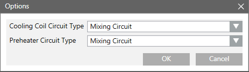
- Select the hydraulic circuit for each aggregate and click OK.
- In the File name column, take over the suggested file name or change it.
- In the Target folder drop-down list, select the save location for the generated graphic.
NOTE: The folder must be created in the graphics editor. - (Optional) Repeat steps 2 – 11 for additional ventilation plants or add cooling plants and heating plants.
- Click Generate graphic
 and then Yes to start the generation process.
and then Yes to start the generation process. - The Generation status column displays:
In progress. - The Generation report dialog box displays once the graphics page is generated.
- Click OK.
- (Optional) Click Log file to display additional details on the created graphic.
7 - Heating Plant
- The Desigo Graphics Generator tab is open.
- In System Browser, select logical view.
- Create the boiler.
- Create hot water generation.
- Create heating group 1.
- Create heating group 2.
- (Optional) Add cooling plants and ventilation plants.
- Click Generate graphic and then Yes to start the generation process.
- The Generation status column displays:
In progress. - The Generation report dialog box displays once the graphics page is generated.
- Click OK.
- (Optional) Click Log file to display additional details on the created graphic.
Positioning Partial Plants on a Graphics Page
The partial plants solar plant and hot water plant (not all types) require two reserved areas on the graphics page. You must ensure when positioning that the following partial plant receives the correct position number.
Positioning Partial Plants | |||||||||
Plant Part | Variants with Positioning Data | ||||||||
Boiler 1 | 1 |
|
|
|
| 1 | 1 |
|
|
Boiler 2 |
|
|
|
|
| 2 | 2 |
|
|
Boiler 3 |
|
|
|
|
|
| 3 |
|
|
Supply line |
|
|
|
|
| 3 | 4 |
|
|
Solar plant |
|
|
| 1 |
|
| - |
|
|
Hot Water Handling | 2 |
| 1 | 3 |
| 4 | - |
|
|
Heating Group 1 | 4 | 1 | 3 | 5 |
| 6- | 5 |
|
|
Heating Group 2 | 5 | 2 | 4 | 6 |
| 7 | 6 |
|
|
Heating Group 3 | 6 | 3 | 5 | 7 |
|
| 7 |
|
|
Heating Group 4 | 7 | 4 | 6 |
|
|
|
|
|
|
Heating Group 5 |
| 5 | 7 |
|
|
|
|
|
|
Heating Group 6 |
| 6 |
|
|
|
|
|
|
|
Heating Group 7 |
| 7 |
|
|
|
|
|
|
|
Example for a Heating Plant Configuration
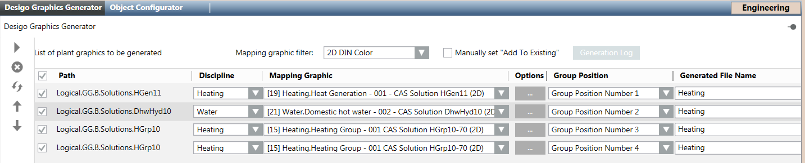
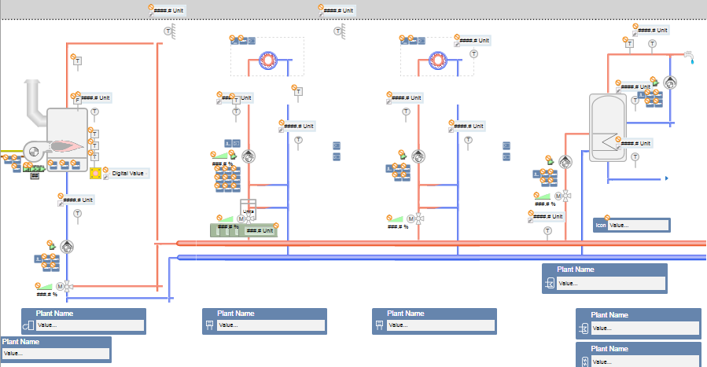
Heating boiler
- Select Logical > [Network name] > [Plant hierarchy] > [Plant name] (boiler).
- In the Mapping Graphics Filer drop-down list, select [2D DIN Color].
- Drag-and-drop the plant to the table in the Desigo Graphics Generator tab.
- In the Discipline column, select option Heating.
- The selected filter reduces the selection of mapping graphics in the Mapping graphic column.
- Open the drop-down list in the Mapping graphic column. Moving the mouse displays a preview of the mapping graphics. The mapping graphics with the best match are displayed at the top.
- Select the appropriate mapping graphic.
- Click the button in the Options column.
- The Options dialog box opens. Only the options relevant to this mapping graphic are displayed.
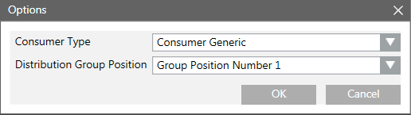
- For the heating group, select:
a. The boiler position on the generated page.
b. Click OK. - In the File name column, take over the suggested file name and change it.
NOTE: Pay attention to capitalization in the file name.
Hot Water Handling
- Select Logical > [Network name] > [Plant hierarchy] > [Plant name] (hot water supply).
- Drag-and-drop the plant to the table in the Desigo Graphics Generator tab.
- In the Discipline column, select option Heating.
- The selected filter reduces the selection of mapping graphics in the Mapping graphic column.
- Open the drop-down list in the Mapping graphic column. Moving the mouse displays a preview of the mapping graphics. The mapping graphics with the best match are displayed at the top.
- Select the appropriate mapping graphic.
- Click the button in the Options column.
- The Options dialog box opens. Only the options relevant to this mapping graphic are displayed.
- For the heating group, select:
a. the heating group position on the generated page.
b. Click OK. - In the File name column, enter the same file name as the boiler.
NOTE: Pay attention to capitalization in the file name. - Select the Add check box. No new graphics page is generated when the check box is selected, but rather is generated as part of an existing graphics page.
Heating Group 1
- Select Logical > [Network name] > [Plant hierarchy] > [Plant name] (heating group).
- Drag-and-drop the plant to the table in the Desigo Graphics Generator tab.
- In the Discipline column, select option Heating.
- The selected filter reduces the selection of mapping graphics in the Mapping graphic column.
- Open the drop-down list in the Mapping graphic column. Moving the mouse displays a preview of the mapping graphics. The mapping graphics with the best match are displayed at the top.
- Select the appropriate mapping graphic.
- Click the button in the Options column.
- The Options dialog box opens. Only the options relevant to this mapping graphic are displayed.
- For the heating group, select:
a. The position of the heating group on the generated page
b. The graphic symbol for the consumer
c. Click OK. - In the File name column, enter the same file name as the boiler.
NOTE: Pay attention to capitalization in the file name. - Select the Add check box. No new graphics page is generated when the check box is selected, but rather is generated as part of an existing graphics page.
Heating Group 2
- Select Logical > [Network name] > [Plant hierarchy] > [Plant name] (heating group).
- Drag-and-drop the plant to the table in the Desigo Graphics Generator tab.
- In the Discipline column, select option Heating. The selected filter reduces the selection of mapping graphics in the Mapping graphic column.
- Open the drop-down list in the Mapping graphic column. Moving the mouse displays a preview of the mapping graphic. The mapping graphic with the best match is displayed at the top.
- Select the appropriate mapping graphic.
- Click the button in the Options column.
- The Options dialog box opens. Only the options relevant to this mapping graphic are displayed.
- For the heating group, select:
a. the position of the heating group on the generated page. The group position number must be unique to the graphics page.
b. the graphic symbol for the consumer.
c. Click OK. - In the File name column, enter the same file name as the boiler.
NOTE: Pay attention to capitalization in the file name. - Select the Add check box. No new graphics page is generated when the check box is selected, but rather is generated as part of an existing graphics page.
8 - Refrigeration Plant
The workflows for a refrigeration plant are essentially the same as generation for heating.